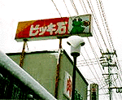
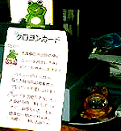
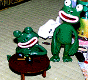

豚カツ食べるならレストラン『ビッキ石』！ 【山形発=yosios同志記者】場所は、山形県米沢市。国道１３号線沿いにレストラン『ビッキ石』という店があったので家族で、行ってまいりました。その次の日食べ過ぎで、仕事を休んでしまいました。実は、風邪です(笑)。ま、それはそうと、びっき石さんは、お肉屋さん経営のレストランなので、とんかつ一つ、とってもすごくおおきいです。今回は、食べませんでしたが、ハンバーグもわらじのようなハンバーグが出てくるそうです。
 うわさでは、かつカレーが、テーブルほどのお皿でくるそうです。この日も、頼む事は、頼んだのですが、ウエイトレスさんにやんわりと、「ご無理では？」と、ことわられました。味のほうは、なかなかです。
【全国かえる奉賛会】レストラン『ビッキ石』。心地よい響きの店名であるなー。どうしてビッキ石なのであろうか。ちょっと謎だ。一瞬カエルを食べるのではないかと思ったが、超巨大豚カツが、売り物のレストランであるらしい。レジにある小銭入れのカエルも気になるが、最も気になるのが、レジスターに貼られている、ケロヨンカードについてだ。 カエル花押でカエラーの証明！
それぞれ個性的なカエル絵なので、大王は、いつも感心して、ひそかにコレクションしていたのですが。自分だけで楽しむのはもったえないくらい集まって来たので、投稿常連さんを中心に、いくつかを紹介することにしましたああ。 カエル文字絵コンテストでも開くかなーっ。投稿の際にも、できるだけ直筆署名として、紹介するので、コンパクトで楽しいカエル文字絵を。投稿原稿とともに遠慮なく配達してくれーっ。 カエルの輪郭と目玉をどんな記号で表現するかがポイントですね。
ちなみに、大王は無精者なので、花押をもっていない。誰かコンパクトな大王文字絵を創作してくれええええーっ！署名に使うぞおお。
 新型モローには、謎のハルオが付属？【福岡発=モロー寺井同志記者】モローの生産はその後も、順調に進んでます。居眠りモローには、ハルオくんが付属するかも。ハルオとは、知人が『モロー君に持たせて』と作った謎の生物です。ちょっとイヤ系なのですが、ビーンにおけるクマ人形みたいなものか。。。訪問９９９９９人目に記念品贈呈！【全国かえる奉賛会】９９９９９人目の訪問者に、記念品を贈呈するぞー。該当者は、大王様へのメールwakuro-3@hf.rim.or.jpで自己申告してくれー。福岡かえる展２のＭＬを開設！【福岡かえる展２事務局】福岡かえる展２の実行委員会用のメーリングリストを開設しました。公式ホームページの他に、実行委員会メンバーが情報交換する場所です。もちろん最新の情報は、昨年同様に、できるかぎりすべて、公式ホームページで公開します。メーリングリストで、その準備段階から体験したいというカエラーは、参加していただいてかまいません！参加申し込みは、ここからも自分でできるからねーっ！ 投稿採用者に武功カエル徽章を授与！ |
かえる古新聞過去に取り上げた記事を見出し付きで一覧したい人は、ここをクリック◆創刊号を見る◆先週号を見る◆話題の号を見る◆かえる新聞の昔を読む
|
私も入っています。。全国かえる奉賛会
大王様に会うには、このバナーをクリック。ずっと奥に写真館があるぞ。全国かえる奉賛会に入会するには、自分のホームページのどこかに、下の部分を追加するとバナーがリンク付きで表示されるぞ。どんどん入会しましょー |


|